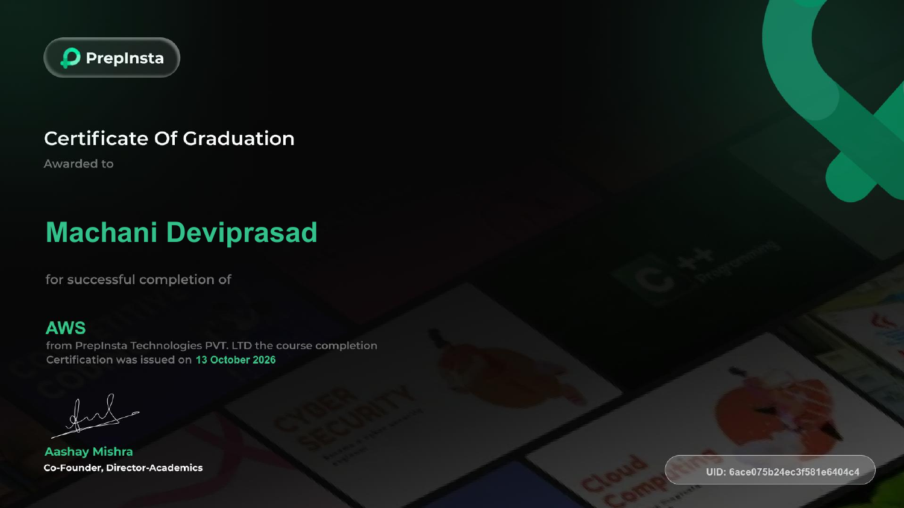

01 / COMPUTE
Compute & scaling
Launching and managing instances, event-driven functions, serverless APIs, and adjusting capacity to demand.
EC2 · Lambda · API Gateway · Auto Scaling
Aspiring AWS Cloud Engineer
Hello, I’m Machani Deviprasad.
BCA graduate learning to connect compute, storage, networking, and web hosting with AWS.
I’m starting my cloud career with a practical approach: learn the fundamentals, understand how they connect, and keep improving.
I’m a Bachelor of Computer Applications graduate based in Kurnool, Andhra Pradesh, with working knowledge of AWS services and an interest in cloud infrastructure.
My experience at Blinkit taught me to follow documented processes, work carefully under time pressure, and collaborate with a team. I’m bringing that mindset to an entry-level role in Cloud Engineering, AWS Support, or Cloud Operations.
Date of birth ·
02 / THE TOOLKIT
Working knowledge developed through AWS training and study, supported by version control and a practical approach to learning.
Showing all 9 skill categories
Launching and managing instances, event-driven functions, serverless APIs, and adjusting capacity to demand.
Persistent block storage with EBS, S3 buckets and access control, and S3 Glacier for low-cost archival storage.
Subnets, route tables, internet gateways, security groups, hosted zones, domain routing, and public, private, and Elastic IPs.
Hosting static websites on S3 and delivering them securely over HTTPS with a CDN.
Managed relational databases with RDS, plus NoSQL tables with DynamoDB for serverless apps.
Users, groups, roles, and policies with an understanding of least-privilege access.
Understanding how Application Load Balancers distribute incoming traffic across EC2 instances.
Monitoring AWS resources and understanding alarms and alerts with Amazon CloudWatch.
Tracking code changes with Git, working with branches and commits, and managing repositories and collaboration on GitHub.
My training covers EC2 and EBS, S3 access control, VPC design and IP addressing, Auto Scaling, RDS, DynamoDB, Lambda with API Gateway, IAM best practices, and static website hosting with S3 and CloudFront, and DNS with Route 53. I have also studied Application Load Balancers for distributing traffic across EC2 instances, and CloudWatch monitoring, alarms, and alerts.
03 / PERSONAL PROJECTS
Putting AWS knowledge into practice with a hosted portfolio and two serverless apps.
Built and hosted this responsive portfolio with a custom error page.
PERSONAL PROJECT · AWS
S3 frontend delivered over HTTPS with Amazon CloudFront, API Gateway, AWS Lambda (Python) and Amazon DynamoDB. Applied least-privilege IAM, configured CORS, and debugged the Lambda using CloudWatch Logs.
View live app ↗See how it works ↓PERSONAL PROJECT · AWS
Photo upload app delivered over HTTPS with Amazon CloudFront, with presigned-URL uploads to a private S3 bucket, using API Gateway, Lambda and DynamoDB. Fixed CORS issues using CloudWatch Logs and curl.
View live app ↗See how it works ↓HOW IT WORKS
Follow one request through the architecture. Select a step to jump to it. CloudFront serves the page over HTTPS.
HOW IT WORKS
Follow one image upload through the architecture. Select a step to jump to it.
AWS course completion from PrepInsta, issued on 13 October 2026.

Awarded for successful completion of the AWS course from PrepInsta Technologies Pvt. Ltd.
Issued
05 / EXPERIENCE
Worked in a fast-paced quick-commerce fulfillment environment.
05 / EDUCATION
06 / WHAT’S NEXT?
Open to entry-level Cloud Engineering,
AWS Support, and Cloud Operations roles.